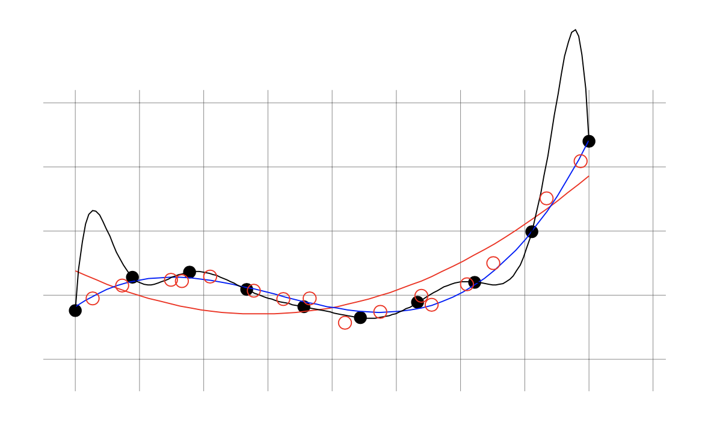
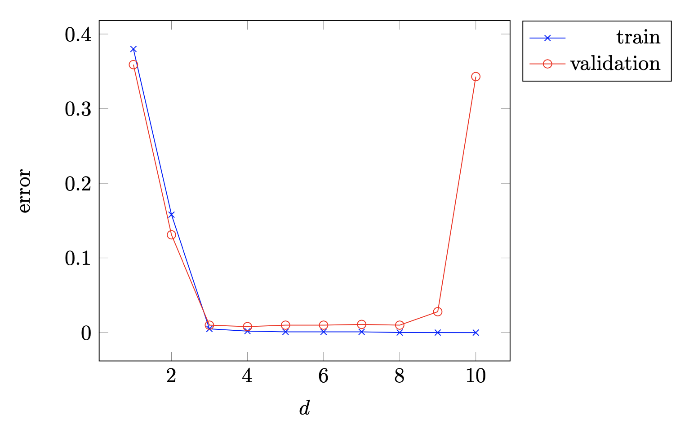
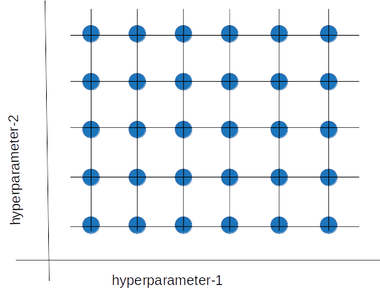
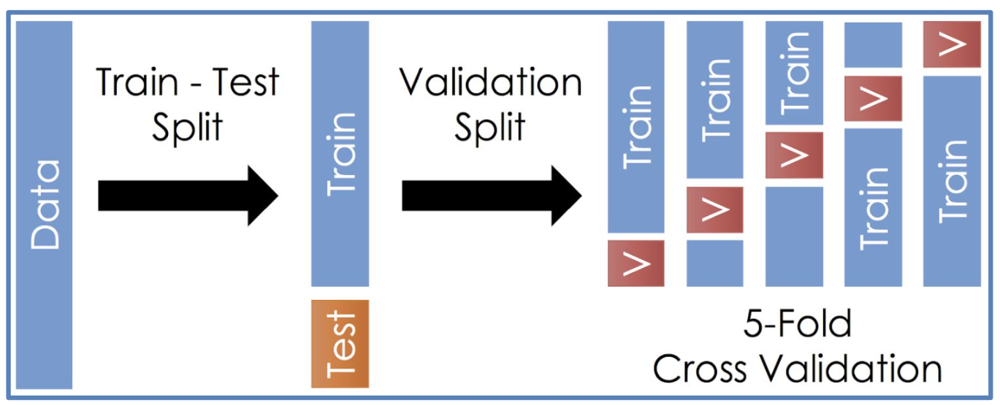
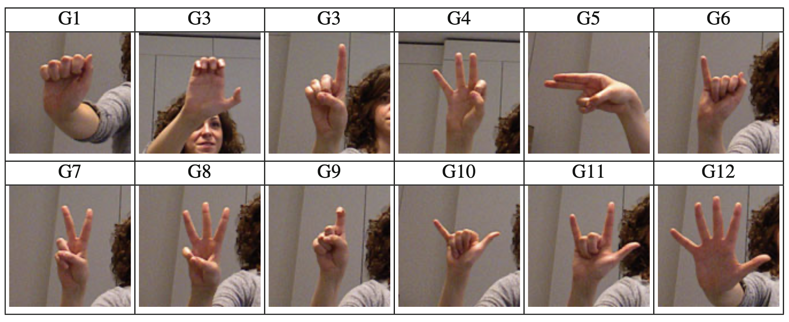
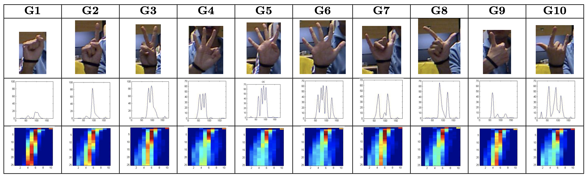
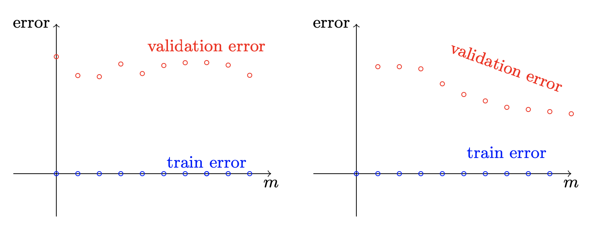

7 Model Selection
Let’s go back to the polynomial regression seen in sec-regressione-polinomiale and pay attention to our way of proceeding: although we assume a non-linear relationship between the data, we are still able to exploit the hypothesis class relative to linear regression to find the suitable fit. This is possible by “sacrificing” the dimension of the input data, making it go from \(1\) to \(n+1\) being \(n\) the degree of the polynomial considered:
\[ x\to\left(1,x,x^2,\dots,x^n\right) \]
We therefore transform each input data by increasing the complexity of the domain, and in this way - as shown above - we are able to apply linear regression obtaining the best fit.
At this point, however, the question to ask would be: how to choose, at the beginning, the degree of the polynomial? How do we know which polynomial best fits our data set?
We understand, therefore, that we have identified the hypothesis class to solve the problem, but not the specific model characterized by its hyper-parameters, which in the example just seen is only one - the degree of the polynomial. Its search goes by the name of model selection, or in English model selection.
7.1 Validation Set
We have already seen in sec-insiemi-di-addestramento-test-e-validazione how the search for hyper-parameters is solved by a split of the training set, with part of it going to constitute the validation set, usually indicated with \(\mathcal{V}\). In reality, this is not the only possible method: another technique adopted is the Structural Risk Minimization, which we will not go into as it is a theoretical tool that is not very practical to use in many real problems.
As we know, the validation set must in no way be used even partially for training, because otherwise an impartial evaluation of the selected hypothesis would not be possible and there would be serious risks of overfitting.
The validation set therefore represents a first test for the chosen hypothesis, which allows to provide a better estimate of the true error with respect to the empirical risk. In practice, several configurations of hyper-parameters are selected, and for each of these the best hypothesis is determined according to ERM; these are then passed to the validation set from which the one with the lowest loss will emerge, which will finally be subjected to the test set.
There is an important theorem that quantifies an upper bound for the difference between the loss calculated through the validation set and the true error that we see below.
Let \(\mathcal{V}\) be a validation set composed of \(m_{\mathcal{V}}\) elements and let \(h\) be a predictor. Assuming that the loss function \(L_{\mathcal{V}}(h)\) expresses a value in the interval \([0,1]\) then for every \(\delta\in(0,1)\) it results
\[ \abs{L_{\mathcal{D}}(h)-L_{\mathcal{V}}(h)}\leqslant\sqrt{\frac{\log\left(\frac{2}{\delta}\right)}{2m_{\mathcal{V}}}} \tag{7.1}\]
with a probability of at least \(1-\delta\) with respect to the choice of \(\mathcal{V}\).
We can note how the upper bound is similar to that of the quantitative version of the fundamental theorem of statistical learning (sec-il-legame-tra-dimensione-vc-e-sample-complexity); in fact, isolating \(\epsilon\) from the relation on agnostic PAC learning we will have
\[ m\leqslant C\frac{d+\log\left(\frac{1}{\delta}\right)}{\epsilon^2} \ \Longrightarrow \ \epsilon\leqslant\sqrt{C\frac{d+\log\left(\frac{1}{\delta}\right)}{m}} \]
being both \(\epsilon\) and \(m\) two positive quantities.
Resuming equation (eq-convergenza-uniforme-teorema-epsilon) we will write
\[ L_{\mathcal{D}}(h)\leqslant L_{\mathcal{S}}(h)+\epsilon\leqslant L_{\mathcal{S}}(h)+\sqrt{C\frac{d+\log\left(\frac{1}{\delta}\right)}{m}} \tag{7.2}\]
which we can compare with the thesis of the theorem just presented:
\[ L_{\mathcal{D}}(h)\leqslant L_{\mathcal{V}}(h)+\sqrt{\frac{\log\left(\frac{2}{\delta}\right)}{2m_{\mathcal{V}}}} \tag{7.3}\]
The main difference consists in the presence of \(d\) - that is, of the VC dimension - in (eq-selezione-del-modello-errore-training), as the predictor is obtained starting from the training set, and the more complex the problem is, the larger \(d\) is. Since the objective is to minimize the empirical risk as much as possible, usually \(d\) is such as to make the upper bound of (eq-selezione-del-modello-errore-training) much larger than that of (eq-selezione-del-modello-errore-validation), therefore through the validation set we are able to obtain a better estimate of the true error.
The validation set, therefore, is not used to formulate a hypothesis in itself, because it receives as input a hypothesis already obtained through an algorithm (typically ERM), but its function is to provide a better estimate of the error: this is the reason why it is important that there is no form of training at the time of validation, since otherwise the formula (eq-selezione-del-modello-errore-validation) would no longer be correct. The price we have to pay for this better estimate, however, is precisely that of an additional set of data with respect to the training one.
Let’s summarize below the way to proceed:
- Different algorithms or a single algorithm with different configurations of hyper-parameters are chosen
- For each of the \(r\) choices made, the relative hypothesis class \(\mathcal{H}_i=\left\{h_{i1},h_{i2},\dots,h_{in_i}\right\}\) is considered, being \(n_i\) the size of the \(i\)-th class
- The machine learning algorithm is trained on each of the \(r\) classes independently, finding for each the best hypothesis according to ERM
- Through the best predictors found we build the new class \(\mathcal{H}'=\left\{h_1^{ERM},h_2^{ERM},\dots,h_r^{ERM}\right\}\) of size \(r\)
- For each of the predictors in the class \(\mathcal{H}'\) the loss \(L_{\mathcal{V}}\) is calculated and the one that minimizes this quantity is finally selected
We note that \(\mathcal{H}'\) is a finite hypothesis class, deriving from a set of algorithms and configurations that are finite in number. Since the selection of the predictor from this class occurs similarly to what happens for training (i.e. through ERM), the same principle that we know will apply: the larger the class, the more points it will be necessary to have in the set to minimize the error. This means that we cannot afford to try too many algorithms and too many configurations, because at a certain point we would run the risk of overfitting since we cannot insert excessive points in the validation set by subtracting them from the training set and the test set.
What has been said is expressed in quantitative form in the following theorem.
Let \(\mathcal{H}'=\left\{h_1^{ERM},h_2^{ERM},\dots,h_r^{ERM}\right\}\) be a set of predictors. Assuming that the loss function, for each of these predictors, expresses a value in the interval \([0,1]\), and assuming that the validation set \(\mathcal{V}\) of size \(m_{\mathcal{V}}\) is sampled independently of \(\mathcal{H}'\) then it results
\[ \abs{L_{\mathcal{D}}(h)-L_{\mathcal{V}}(h)}\leqslant\sqrt{\frac{\log\left(\frac{2\abs{\mathcal{H}'}}{\delta}\right)}{2m_{\mathcal{V}}}} \]
with a probability of at least \(1-\delta\) with respect to the choice of \(\mathcal{V}\) and for every \(h\in\mathcal{H}'\).
Applying the theorem to a single hypothesis we will have that
\[ P\left(\abs{L_{\mathcal{D}}(h)-L_{\mathcal{V}}(h)}>\sqrt{\frac{\log\left(\frac{2}{\delta}\right)}{2m_{\mathcal{V}}}}\right)\leqslant\delta \hspace{0.6cm} \forall h\in\mathcal{H}' \]
in the sense that the probability that the difference in modulus of the loss functions is greater than that square root is less than or equal to \(\delta\).
From the sum rule in probability theory we know that
\[ P\left(\bigcup_iA_i\right)\leqslant\sum_iP\left(A_i\right) \]
Let’s indicate with \(P_{tot}\) the probability associated with the union of all the hypotheses, or in other words with the probability that the validation set is “unlucky” for all the hypotheses of the class. It will result:
\[ P_{tot}\leqslant\sum_{h\in\mathcal{H}'}\delta=\abs{\mathcal{H}'}\delta \]
Setting \(\delta_{tot}=\abs{\mathcal{H}'}\delta\) we obtain
\[ P_{tot}\leqslant\delta_{tot} \]
which is precisely the form known to us. For this relationship to make sense, however, it is necessary that \(\delta_{tot}<1\), and it is not said that by summing \(\abs{\mathcal{H}'}\) times \(\delta<1\) we obtain a number less than one. Let’s therefore set:
\[ \delta'=\frac{\delta}{\abs{\mathcal{H}'}} \]
We therefore choose \(\delta'\) as an upper bound for the probability associated with the single predictor, and we note that, by making \(\delta_{tot}\) explicit, we obtain
\[ \delta_{tot}=\abs{\mathcal{H}'}\delta'=\abs{\mathcal{H}'}\cdot\frac{\delta}{\abs{\mathcal{H}'}}=\delta \]
This result tells us that, by normalizing the upper bound for the single hypotheses with respect to the size of the class \(\mathcal{H}'\), it results \(\delta_{tot}\equiv\delta\).
According to what we have said, for every \(h\in\mathcal{H}'\) it results
\[ \abs{L_{\mathcal{D}}(h)-L_{\mathcal{V}}(h)}\leqslant\sqrt{\frac{\log\left(\frac{2}{\delta'}\right)}{2m_{\mathcal{V}}}}=\sqrt{\frac{\log\left(\frac{2\abs{\mathcal{H}'}}{\delta}\right)}{2m_{\mathcal{V}}}} \]
with a probability greater than or equal to \(1-\delta_{tot}=1-\delta\), precisely as predicted by the thesis.
Resuming the example of polynomial fitting, we can compare the error on the training and the error on the validation in what is called the model selection curve.


The largest errors are had with polynomial degrees that are too low and with degrees that are too high: in the first case the high error is expressed both in the training and in the validation, highlighting the fact that the curve does not adapt well to the training data and at the same time is not able to extend to another data set (the validation one); this is, as we know, the phenomenon of underfitting. In the second case, the model adapts perfectly to the training data, while it is the validation set that reveals an evident error: this is the opposite phenomenon to the previous one, that is, that of overfitting.
The model selection curve clearly expresses the importance of selection through a validation set: without the latter, in fact, we would tend to prefer higher degrees that greatly decrease the empirical risk, but obtaining a high error then in the test set; the validation set therefore acts as a “filter”, offering us a new point of view on the performance of the predictors obtained through ERM.
7.1.1 Grid search
The example of polynomial fittings takes into consideration a hyper-parameter belonging to the set of natural numbers. It is not uncommon, however, to have to deal with hyper-parameters of a real type, and which can therefore formally assume infinite values.
In these cases, a method known as grid search is applied, which consists in the finite subdivision of the numerical interval associated with the possible values that a hyper-parameter can assume. An example of a grid obtained from two hyper-parameters is shown in the following figure.

This method is well suited in the case where the loss function has only one minimum: in this case, in fact, it is possible to “zoom” into the region of the grid where the most promising results have been obtained and build a finer grid, repeating the process again until one is satisfied with the accuracy of the calculation. In the case of multiple minima, however, it would be a matter of performing multiple searches in different areas, making the method inefficient.
We must also always keep in mind the discussion seen above regarding the size of the class, according to which we cannot study an excessive number of configurations: we know, in fact, that the quality of the estimate of the true error decreases with the number of models. In essence, the more models are considered, the more the estimate of the true risk through the validation set becomes in turn an empirical risk, similarly to what happens with the training set. This is precisely the reason why we need, in addition to the validation set, also the test set: since it is used neither for training nor for validation, it offers the statistical guarantee of being a good approximation for \(L_{\mathcal{L}}(h)\).
The critical point of this process concerns the exclusive use of the test set as an estimate of the error, and not as a useful feedback to repeat the learning process: if the result did not meet our expectations and we wanted to intervene on the models or algorithms based on the result, we could not then reuse the same test set to repeat the estimate of the true risk, as the test set would become just another validation set not able, by its nature, to provide effective estimates on performance.
7.1.2 K-Fold Cross Validation
A common problem in the field of machine learning is that of not having a very large data set available. Defining a validation set in these cases is more “expensive”, because it means considerably reducing the number of data on which the training takes place, especially if the models to be tried are different.
In these cases, what is called K-Fold Cross Validation is performed, which takes place following the split between the training set and the test set:
- The training set of size \(m\) is divided equally into \(k\) subsets (called folds) of size \(\frac{m}{k}\)
- For each fold, the algorithm is trained on the union of all the others, and the selected hypothesis is validated on the fold in question, thus calculating the error
- The estimate of the true error corresponds to the average of the estimates calculated for each fold

Let’s observe an example related to gesture recognition; let’s imagine we have images of twelve gestures, each repeated ten times by fourteen different people, for a total of \(1680\) images.

The images are converted into feature vectors with two elements: the first is the distance of the fingers from the center of the palm of the hand, and the other is the curvature of the same fingers. In Figure fig-selezione-del-modello-riconoscimento-dei-gesti-dati-in-input we can observe some of these gestures together with the relative histogram of the distances (as a function of the angle with respect to the palm of the hand) and that of the curvatures (as a function of the scale level, that is, of the level of detail of the image).

As mentioned, the total images available are \(1680\), so it is convenient to choose the K-Fold Cross Validation method. In this regard, this example is also useful for understanding how to select the folds with criteria; we know in fact that the same person will not diversify the same gesture that much, so it is useful to maximize the differences between the training and validation set by building the validation set using all the gestures of a single person: if this were not the case, in fact, there would be images of the same person in both sets, potentially causing overfitting in the model.
7.1.3 New decomposition of the error
In sec-decomposizione-dellerrore we discussed how the error can be decomposed into two components:
- Approximation error \(L_{\mathcal{D}}\left(h^*\right)\), equal to the error associated with the best predictor in the hypothesis class, indicated with \(h^*\)
- Estimation error \(L_{\mathcal{D}}\left(h_{\mathcal{S}}\right)-L_{\mathcal{D}}\left(h^*\right)\), which tells us what the difference is between the true error (relative to the hypothesis \(h_{\mathcal{S}}\) we found) and the approximation error
Since it is sometimes difficult to derive the approximation error in a problem, it is possible to use the empirical risk and the error on the validation set to decompose the true error in another form; by adding and subtracting both \(L_{\mathcal{S}}\left(h_\mathcal{S}\right)\) and \(L_{\mathcal{V}}\left(h_\mathcal{S}\right)\) we will obtain
\[ L_{\mathcal{D}}\left(h_\mathcal{S}\right)=\left(L_{\mathcal{D}}\left(h_\mathcal{S}\right)-L_{\mathcal{V}}\left(h_\mathcal{S}\right)\right)+\left(L_{\mathcal{V}}\left(h_\mathcal{S}\right)-L_{\mathcal{S}}\left(h_\mathcal{S}\right)\right)+L_{\mathcal{S}}\left(h_\mathcal{S}\right) \]
The first term on the right-hand side we know is bounded above according to equation (eq-selezione-del-modello-teorema); the second term, on the other hand, is able to estimate the overfitting of the model as we know from Figure fig-model-selection-curve; always from the same figure we also know that, in the case the third term is very large, we are instead in the presence of underfitting.
7.1.4 When learning fails
Let’s summarize below the steps to be performed in case the results found are not satisfactory:
Once the hyper-parameters have been chosen, it is useful to graph the model selection curve to make sure that it is indeed the best choice.
If the training error \(L_{\mathcal{S}}\left(h_{\mathcal{S}}\right)\) is too large, we are in a clear case of underfitting. Since this does not depend on the learning set \(\mathcal{S}\) but only on the hypothesis class \(\mathcal{H}\), we will have to act on the latter. We can do this in two ways:
- Widen \(\mathcal{H}\), as its size may not be such as to contain the predictor that best classifies the data
- Change \(\mathcal{H}\), because we may be looking in the wrong class of predictors. Returning to the example of polynomial fitting, if the points were distributed according to an exponential, we would actually be wrong from the start about the functions to look for.
Another possibility is to act on the description of the data itself, that is, on the feature vector: if this contains too many details, which may be irrelevant, then the learning process can become too difficult for the algorithm. It is also possible that some features are being ignored in favor of others that are however an obstacle to optimal classification.
If the training error \(L_{\mathcal{S}}\left(h_{\mathcal{S}}\right)\) is small but the validation error is high, it is advisable to graph the so-called learning curves: to obtain them, it is sufficient to repeat the training and validation on a gradually increasing portion of data, until all of them are included. The two possibilities that could arise are shown in Figure fig-selezione-del-modello-learning-curve, assuming for simplicity that the training error remains constant.
The reason for the learning curves is due to the fact that the validation error does not depend only on \(\mathcal{H}\) but also on \(\mathcal{S}\), so this time it is also possible to act on the latter. In fact, if we were in the situation shown in the graph on the right of Figure fig-selezione-del-modello-learning-curve, we would guess that by further increasing the training and validation data, the two curves could get even closer. If it were not possible to expand the amount of data available, another possibility is to reduce the complexity of the class \(\mathcal{H}\) in order to limit overfitting.

Figure 7.6: Learning curve graphs If we were in the situation on the left, instead, we would notice that even by increasing the amount of data available, the validation curve would not seem to go down. We would thus return to the previous point, where we had no other choice but to change the hypothesis class or modify the feature vector.
It should be borne in mind that what has been written can only be done before using the test set. If the latter is applied, in fact, the learning is considered concluded and it is not possible to recalibrate parameters and hyper-parameters using the same test set as a final proof. (Obviously, it is not forbidden to repeat the learning itself, as long as the final test set consists of new data not present in the previous learning process: the old test set will thus become part of the training and validation set.)
7.2 Regularization
One of the problems we often find ourselves facing is that of the complexity of the hypotheses considered: on the one hand, we do not want them to be excessively complex, because the algorithm would risk adapting excessively to the data in the set, including the noise associated with them; on the other hand, we do not want them to be too general, because we would run the risk of not really capturing the relevant characteristics of the data.
The learning paradigm that we have used so far, Empirical Risk Minimization, tends by its nature to select predictors that overfit, as it has the objective of globally reducing the error on all the available data. This is inconvenient, because a solution with the opposite problem, that is, underfitting, is generally preferable: in fact, it is easier to understand why a simpler solution fails in learning than a more complex one, and it is therefore easier to correct by following the feedback of the results.
7.2.1 Regularized Loss Minimization
To change the paradigm, we could think of not only minimizing the empirical risk, but the sum of the latter with a new function, called the regularization function (In English regularization function.), which has the objective of penalizing the most complex solutions.
Formally, given a hypothesis \(h\) in the form of a weight vector (These weights would correspond, for example, to the coefficients in a linear model, or to the weights of a neural network.) \(\boldsymbol{w}=\left(w_1,\dots,w_d\right)^T\in\mathbb{R}^d\), the regularization function \(R(\boldsymbol{w})\) is defined as
\[ R:\mathbb{R}^d\to\mathbb{R} \]
From this it is possible to define the Regularized Loss Minimization (RLM) algorithm, which selects \(h\) from the following expression:
\[ \boxed{\argmin_{\boldsymbol{w}}\left(L_{\mathcal{S}}(\boldsymbol{w})+R(\boldsymbol{w})\right)} \]
The solution will therefore be a compromise between the one that minimizes the empirical risk and the one that tends to a lower complexity. According to this view, the term \(R\left(\boldsymbol{w}\right)\) can be seen as a stabilizer in the search for the best solution, making the ERM less vulnerable to outliers and peculiarities in the learning set.
7.2.2 Tikhonov Regularization
The main form of regularization is given by Tikhonov regularization, which defines \(R\) as the \(L2\) norm of the weights:
\[ R(\boldsymbol{w})=\lambda\norm{\boldsymbol{w}}^2=\lambda\sum_{i=1}^dw_i^2 \]
The norm \(\norm{\boldsymbol{w}}^2\) represents the complexity of the hypothesis, while the parameter \(\lambda\) calibrates the compromise between empirical risk and complexity of the solution: the larger it is, the more a low complexity will be preferred at the expense of a higher empirical error.
7.2.3 Ridge Regression
The application of RLM for a linear regression problem, choosing the quadratic objective function as the loss function and Tikhonov regularization, is called Ridge regression.
Recalling the loss function from equations (eq-pac-learning-loss-function-generalizzata) and (eq-pac-learning-obiettivo-quadratica) we will write:
\[ \boldsymbol{w}=\argmin_{\boldsymbol{w}}\left(\frac{1}{m}\sum_{i=1}^m\left(\sprod{\boldsymbol{x_i}}{\boldsymbol{w}}-y_i\right)^2+\lambda\norm{\boldsymbol{w}}^2\right) \]
Let’s try to calculate \(\boldsymbol{w}\):
\[ \frac{\partial\left(L_{\mathcal{S}}(\boldsymbol{w})+R\left(\boldsymbol{w}\right)\right)}{\partial\boldsymbol{w}}=\frac{2}{m}\sum_{i=1}^m\left(\sprod{\boldsymbol{x_i}}{\boldsymbol{w}}-y_i\right)\boldsymbol{x_i}+\lambda\frac{\partial\norm{\boldsymbol{w}}^2}{\partial\boldsymbol{w}}=0 \tag{7.4}\]
Let’s calculate the derivative \(\frac{\partial\norm{\boldsymbol{w}}^2}{\partial\boldsymbol{w}}\) starting from the differentiation of \(\norm{\boldsymbol{w}}^2\)
\[ \norm{\boldsymbol{w}}^2=\boldsymbol{w^T}\boldsymbol{w} \ \Longrightarrow \ d\norm{\boldsymbol{w}}^2=2\norm{\boldsymbol{w}}d\norm{\boldsymbol{w}}=2\boldsymbol{w}d\boldsymbol{w} \ \iff \ \frac{d\norm{\boldsymbol{w}}^2}{d\boldsymbol{w}}=2\boldsymbol{w} \]
Let’s substitute in (eq-selezione-del-modello-regressione-di-ridge-1):
\[ \frac{\cancel{2}}{m}\sum_{i=1}^m\left(\sprod{\boldsymbol{x_i}}{\boldsymbol{w}}-y_i\right)\boldsymbol{x_i}+\cancel{2}\lambda\boldsymbol{w}=0 \ \Longrightarrow \ \sum_{i=1}^m\sprod{\boldsymbol{x_i}}{\boldsymbol{w}}\boldsymbol{x_i}+\lambda m\boldsymbol{w}=\sum_{i=1}^my_i\boldsymbol{x_i} \]
Let’s rewrite the expression as a function of the matrix \(A\) and the vector \(\boldsymbol{b}\) as done in equation (eq-predictor-lineari-minimi-quadrati-espressione-con-A-e-b):
\[ A\boldsymbol{w}+\lambda mI\boldsymbol{w}=\boldsymbol{b} \]
From this expression we easily derive:
\[ (A+\lambda mI)\boldsymbol{w}=\boldsymbol{b} \ \Longrightarrow \ \boxed{\boldsymbol{w}=(A+\lambda mI)^{-1}\boldsymbol{b}} \]
It is possible to show that, although the matrix \(A\) is not necessarily invertible, the matrix \(A+\lambda mI\) certainly is.
7.3 Stability
In the context of machine learning, the concept of stability arises from the question: what does it mean to encounter “overfitting”?
As we know, within the training set there is noise - understood as statistical perturbations - that can influence the learning of the algorithm. Since this situation is always a risk when using a rule like that of ERM, we have introduced a function, called “regularization”, which allows to stabilize - according to what we have seen - the learning process, for a solution more balanced towards simplicity.
By “stabilizing” we mean that, by slightly changing the learning set, the solution that the algorithm arrives at is still close to the one obtained before the change. Obviously, to give a formal definition, we must try to establish mathematically what we mean by “slightly changing” the set and by “close solution”.
The simplest way to indicate a small change in the training set is to replace one element with another element. If the set \(S\) consists of \(m\) points in the form
\[ \mathcal{S}=\left\{z_1,z_2,\dots,z_m\right\} \]
we will denote by \(\mathcal{S}^{(i)}\) the same set in which the \(i\)-th element is replaced with \(z'\):
\[ \mathcal{S}^{(i)}=\left\{z_1,\dots,z_{i-1},z',z_{i+1},\dots,z_m\right\} \]
We recall that the loss function \(\ell\) depends on the hypothesis \(h\) and the element of the training set \(z\); obviously we will expect that:
\[ \ell\left(A(\mathcal{S}^{(i)}),z_i\right)-\ell\left(A(\mathcal{S}),z_i\right)\geqslant0 \]
This relationship tells us that the loss calculated on the solution obtained from \(\mathcal{S}^{(i)}\) with respect to \(z_i\) is greater than or equal to that obtained from \(\mathcal{S}\) always with respect to \(z_i\). It is intuitive: it is clear that, by replacing \(z_i\) with another element, the solution derived including \(z_i\) will not adapt in the same way.
The problem is now to quantify this difference. To this end, we define a new class of algorithms, called On-Average-Replace-One-Stable (OAROS).
Let \(\epsilon:\mathbb{N}\to\mathbb{R}\) be a monotonically decreasing function.
An algorithm \(A\) is said to be On-Average-Replace-One-Stable with rate \(\epsilon(m)\) if, for every distribution \(\mathcal{D}\), it holds
\[ \mathbb{E}_{(\mathcal{S},z')\sim\mathcal{D}^{m+1},i\sim U(m)}\left[\ell\left(A(\mathcal{S}^{(i)}),z_i\right)-\ell\left(A(\mathcal{S}),z_i\right)\right]\leqslant\epsilon(m) \tag{7.5}\]
In (eq-selezione-del-modello-stabilita-definizione) we find the expected value associated with the difference written previously, where all the points of the training set - including \(z'\) - are extracted from the distribution \(\mathcal{D}\), while the index \(i\) is extracted from the uniform distribution of natural numbers from \(1\) to \(m\).
The difference between loss functions is bounded above by the quantity \(\epsilon(m)\), and it will therefore be this value that determines how stable the algorithm actually is. But why is \(\epsilon(m)\) monotonically decreasing? The answer is intuitive: replacing an element in a small set modifies that set much more than in the case where it was a larger set; consequently, the upper bound will tend to decrease as the size of \(\mathcal{S}\) increases.
Given this definition, we can arrive at the proof of our initial intuition, that is, that stable algorithms do not overfit.
An algorithm \(A\) suffers from overfitting if the difference between the true risk \(L_{\mathcal{D}}(A(\mathcal{S}))\) and the empirical risk \(L_{\mathcal{S}}(A(\mathcal{S}))\) is large. What we want to bound above, therefore, is
\[ \mathbb{E}_{\mathcal{S}\sim\mathcal{D}^m}\left[L_{\mathcal{D}}(A(\mathcal{S}))-L_{\mathcal{S}}(A(\mathcal{S}))\right] \]
The following theorem comes to our aid.
If an algorithm \(A\) is On-Average-Replace-One-Stable with rate \(\epsilon(m)\) then
\[ \mathbb{E}_{\mathcal{S}\sim\mathcal{D}^m}\left[L_{\mathcal{D}}(A\mathcal({S}))-L_{\mathcal{S}}(A(\mathcal{S}))\right]\leqslant\epsilon(m) \]
Our objective is to lead back to the expression (eq-selezione-del-modello-stabilita-definizione), so we will have to try to rewrite the risk functions \(L\) as a function of the loss functions \(\ell\).
Let’s start from the true risk \(L_{\mathcal{D}}(A\mathcal({S}))\). The relative loss function will be calculated with respect to an element \(z'\) not belonging to \(\mathcal{S}\): (As is evident, the risk function \(L\) is simply rewritten as the loss function \(\ell\), although - as mentioned in the previous note - the risk should correspond to the expected value of the loss. I imagine, again as reiterated before, that the expected value of an expected value returns the same quantity, so the written formula should hold.)
\[ \mathbb{E}_{\mathcal{S}\sim\mathcal{D}^m}\left[L_{\mathcal{D}}(A\mathcal({S}))\right]=\mathbb{E}_{(\mathcal{S},z')\sim\mathcal{D}^{m+1}}\left[\ell(A(\mathcal{S}),z')\right] \]
Since all the points are i.i.d. from \(\mathcal{D}\) then it must also hold that
\[ \mathbb{E}_{\mathcal{S}\sim\mathcal{D}^m}\left[L_{\mathcal{D}}(A\mathcal({S}))\right]=\mathbb{E}_{(\mathcal{S},z')\sim\mathcal{D}^{m+1}}\left[\ell\left(A\left(\mathcal{S}^{(i)}\right),z_i\right)\right] \tag{7.6}\]
since \(z_i\notin\mathcal{S}^{(i)}\), just as \(z'\notin\mathcal{S}\).
As for the empirical risk, on the other hand, the point with respect to which the loss is calculated must be contained in the learning set:
\[ \mathbb{E}_{\mathcal{S}\sim\mathcal{D}^m}\left[L_{\mathcal{S}}(A\mathcal({S}))\right]=\mathbb{E}_{\mathcal{S}\sim\mathcal{D}^m,i\sim U(m)}\left[\ell\left(A\left(\mathcal{S}\right),z_i\right)\right] \tag{7.7}\]
Subtracting member by member (eq-selezione-del-modello-stabilita-teorema-1) and (eq-selezione-del-modello-stabilita-teorema-2) we obtain
\[\begin{align*} &\mathbb{E}_{\mathcal{S}\sim\mathcal{D}^m}\left[L_{\mathcal{D}}(A\mathcal({S}))-L_{\mathcal{S}}(A(\mathcal{S}))\right]=\\ =&\mathbb{E}_{(\mathcal{S},z')\sim\mathcal{D}^{m+1},i\sim U(m)}\left[\ell\left(A(\mathcal{S}^{(i)}),z_i\right)-\ell\left(A(\mathcal{S}),z_i\right)\right] \end{align*}\]
which, from the property (eq-selezione-del-modello-stabilita-definizione), returns the thesis.
7.3.1 Tikhonov regularization as a stabilizer
Having mathematically defined what stability is, it is now possible to clearly explain in what sense Tikhonov regularization is a real stabilizer when applied through the RLM algorithm.
To this end, it is useful to define a new property associated with real-valued functions, called Lipschitz continuity.
A function \(f:\mathbb{R}^d\to\mathbb{R}^k\) is said to be \(\rho\)-Lipschitz on \(C\subset\mathbb{R}^d\) if
\[ \norm{f\left(\boldsymbol{w_1}\right)-f\left(\boldsymbol{w_2}\right)}\leqslant\rho\norm{\boldsymbol{w_1}-\boldsymbol{w_2}}\hspace{0.65cm}\forall\boldsymbol{w_1},\boldsymbol{w_2}\in C \]
This definition is useful for understanding mathematically what we mean by a function that changes “quickly”, since the change of the function with respect to the interval (in the limit we would speak of a derivative) is bounded above by the parameter \(\rho\). Intuitively, the more a function changes rapidly, the “worse” a solution it is if chosen as a hypothesis, because it would seem to have adapted well to the input data to the point of overfitting. We therefore understand that we can link the concept of “simplicity” and “smoothness” of a function to that of stability, consequently writing \(\epsilon(m)\) as a function of \(\rho\).
This link emerges in the following theorem.
If the loss function \(\ell(h,z)\) is convex and \(\rho\)-Lipschitz, then the RLM rule with Tikhonov regularization \(\lambda\norm{\boldsymbol{w}}^2\) is On-Average-Replace-One-Stable with rate \(\frac{2\rho^2}{\lambda m}\).
The proof is not required by the course; what interests us is the consequence that this theorem brings with it, that is, the one due to the previous theorem on OAROS algorithms:
\[ \mathbb{E}_{\mathcal{S}\sim\mathcal{D}^m}\left[L_{\mathcal{D}}(A\mathcal({S}))-L_{\mathcal{S}}(A(\mathcal{S}))\right]\leqslant\frac{2\rho^2}{\lambda m} \]
The upper bound of the expression is quite intuitive: on the one hand, we understand that increasing \(\rho\) means worsening stability, since fewer constraints are imposed on the sudden changes of the solution, and on the other hand, we have that increasing \(\lambda\) means improving stability, just as the same is true for \(m\) as explained previously.
7.3.2 Fitting-stability tradeoff
From what we have seen with the introduction of these new concepts, a new dualism naturally emerges, that of fitting versus stability: it is no coincidence that it is possible to speak of a fitting-stability tradeoff.
This is to all intents and purposes a new “version” of the bias-complexity tradeoff, since it also expresses a polarization between two extremes representing overfitting and underfitting. This can be clearly seen by writing the true risk associated with the algorithm:
\[ \mathbb{E}_{\mathcal{S}}\left[L_{\mathcal{D}}(A(\mathcal{S}))\right]=\mathbb{E}_{\mathcal{S}}\left[L_{\mathcal{S}}(A(\mathcal{S}))\right]+\mathbb{E}_{\mathcal{S}}\left[L_{\mathcal{D}}(A(\mathcal{S}))-L_{\mathcal{S}}(A(\mathcal{S}))\right] \tag{7.8}\]
The first term on the right-hand side expresses how well \(A\) fits the training set \(\mathcal{S}\), while the second term measures - as we know - the stability.
In the case of RLM with Tikhonov regularization, the parameter on which the tradeoff is calibrated is \(\lambda\): a value that is too small can reduce the empirical risk but leave room for a dangerous tendency to overfit, while a sufficiently large value allows for a higher empirical risk in favor of greater stability. The aim will therefore be to find the configuration that minimizes the sum in equation (eq-selezione-del-modello-compromesso-fitting-stabilita).